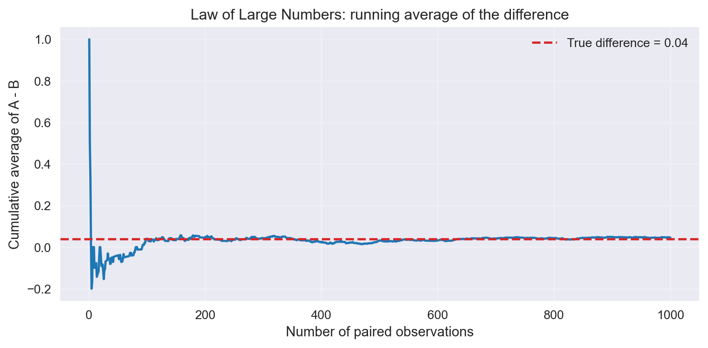
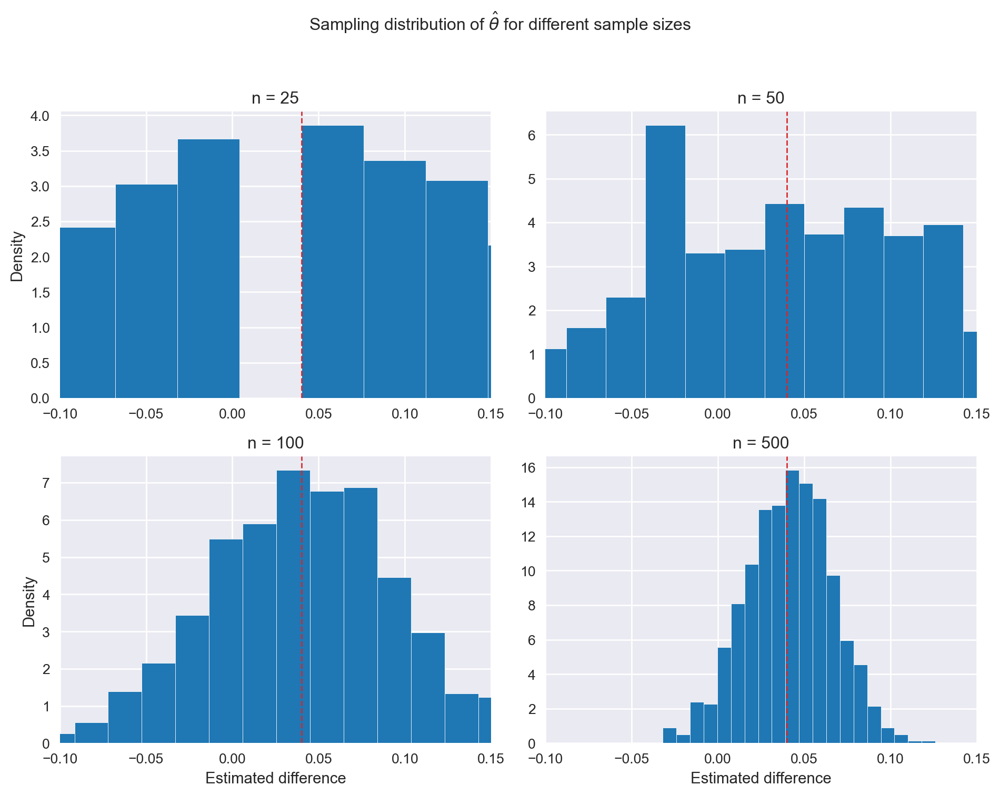

Simulating Key Ideas from Classical Frequentist Statistics
Author
Hans Dong
Published
April 15, 2026
Introduction
A small website wants more newsletter subscribers, so it presents visitors with one of two alternate calls to action. CTA A says “Sign up for our newsletter here!” and CTA B says “Stay up to date by signing up!”. To find out which phrase works better, the site runs an A/B test: visitors are randomly assigned to see one of the two CTAs, and we compare the sign-up rates between the two groups. This experiment is a simple way to use data to choose the better message instead of guessing.
The A/B Test as a Statistical Problem
Each visitor either signs up or does not, so it is natural to model the outcome as a Bernoulli random variable. Visitors who see CTA A are assumed to sign up with probability \(\pi_A\), and visitors who see CTA B are assumed to sign up with probability \(\pi_B\). The parameter we care about is the difference in sign-up rates,
\[
\theta = \pi_A - \pi_B.
\]
Our estimator is the difference in sample means,
\[
\hat{\theta} = \bar{X}_A - \bar{X}_B,
\]
where \(\bar{X}_A\) is the proportion of sign-ups in group A and \(\bar{X}_B\) is the proportion in group B. Because each observation is 0 or 1, the sample mean equals the sample proportion.
Simulating Data
In practice we would not know the true values of \(\pi_A\) and \(\pi_B\). For this exercise, we set them to \(\pi_A = 0.22\) and \(\pi_B = 0.18\) so we can study estimator behavior when the truth is known. The true difference is therefore \(\theta = 0.04\).
| Group | Sample size | Observed proportion |
|:--------|--------------:|----------------------:|
| A | 1000 | 0.225 |
| B | 1000 | 0.179 |
Observed difference = 0.0460
The table above reports the observed sign-up proportions in each group from the simulated data. Because the A group was generated with a higher true probability, the observed difference is positive and close to the true effect of 0.04.
The Law of Large Numbers
The Law of Large Numbers tells us that as the sample size increases, the sample mean converges to the population mean. For our A/B test, that means the difference in observed sign-up rates should settle around the true difference \(\theta\).
differences = A - Bcumulative_mean = np.cumsum(differences) / np.arange(1, n +1)
plt.figure(figsize=(8, 4))plt.plot(np.arange(1, n +1), cumulative_mean, color='tab:blue', linewidth=1.8)plt.axhline(theta_true, color='tab:red', linestyle='--', linewidth=1.8, label=f'True difference = {theta_true:.2f}')plt.xlabel('Number of paired observations')plt.ylabel('Cumulative average of A - B')plt.title('Law of Large Numbers: running average of the difference')plt.legend()plt.grid(alpha=0.25)plt.tight_layout()plt.show()

The line begins fairly noisy and then converges around the true difference of 0.04. This visual confirms that the estimator becomes more stable as the sample size grows.
Bootstrap Standard Errors
To understand how precise our point estimate is, we use the bootstrap to estimate the standard error of \(\hat{\theta}\). The bootstrap draws repeated resamples with replacement from the observed data and measures how much the estimated difference varies across resamples.
| Statistic | Value |
|:--------------|----------:|
| Bootstrap SE | 0.017513 |
| Analytical SE | 0.0179258 |
| 95% CI lower | 0.0116752 |
| 95% CI upper | 0.0803248 |
The bootstrap standard error is very close to the analytical formula for the difference of two independent proportions. This agreement gives us confidence that both approaches are estimating the same sampling variability. The 95% confidence interval summarizes the plausible range for the true difference \(\theta\) given the observed data.
The Central Limit Theorem
The Central Limit Theorem implies that the sampling distribution of \(\hat{\theta}\) becomes approximately Normal as sample size increases. To demonstrate this, we simulate the distribution of \(\hat{\theta}\) for four different sample sizes and compare the resulting histograms.
plt.figure(figsize=(10, 8))ns = [25, 50, 100, 500]for i, m inenumerate(ns): estimates = np.empty(1000)for j inrange(1000): A_sample = np.random.binomial(1, pi_A, size=m) B_sample = np.random.binomial(1, pi_B, size=m) estimates[j] = A_sample.mean() - B_sample.mean() ax = plt.subplot(2, 2, i +1) ax.hist(estimates, bins=20, density=True, color='tab:blue', edgecolor='white') ax.set_title(f'n = {m}') ax.set_xlim(-0.1, 0.15) ax.axvline(theta_true, color='tab:red', linestyle='--', linewidth=1)if i in [2, 3]: ax.set_xlabel('Estimated difference')if i in [0, 2]: ax.set_ylabel('Density')plt.suptitle('Sampling distribution of $\\hat{\\theta}$ for different sample sizes', y=0.98)plt.tight_layout(rect=[0, 0, 1, 0.95])plt.show()

At \(n=25\) the sampling distribution is rough and uneven, but by \(n=500\) it becomes much smoother and bell-shaped. This pattern illustrates the CLT: the sampling distribution approaches Normality as sample size increases.
Hypothesis Testing
We now use the simulated data to test the null hypothesis
| Measure | Value |
|:--------------------|----------:|
| Observed difference | 0.046 |
| Standard error | 0.0179258 |
| z statistic | 2.56613 |
| Two-sided p-value | 0.0102839 |
Although introductory statistics often calls this a “t-test,” our setting is closer to a z-test. The data are Bernoulli rather than Normal, and the CLT provides an approximate Normal distribution for the standardized estimator. For large samples the standard Normal and the t-distribution are nearly identical, which is why the terminology is often used loosely.
The p-value above shows how surprising the observed difference would be if the two CTAs truly had equal sign-up rates. A small p-value would indicate evidence against \(H_0\).
The T-Test as a Regression
A simple regression with an indicator variable produces the same comparison as the two-sample difference in means. We stack the group data into one dataset with outcome \(Y_i\) and treatment indicator \(D_i\) (1 for A, 0 for B):
| Term | Coefficient | Std. error | t value | p-value |
|:----------|--------------:|-------------:|----------:|------------:|
| Intercept | 0.179 | 0.0126818 | 14.1147 | 3.41067e-43 |
| D | 0.046 | 0.0179348 | 2.56485 | 0.0103944 |
The coefficient on \(D\) is the same estimate as the difference in group proportions. The regression standard error and p-value are also very close to the values from the two-sample approach. This equivalence is useful because it means the same regression framework can be extended to include controls, interactions, or additional treatment arms.
The Problem with Peeking
Classical frequentist inference assumes the sample size is fixed before the test is performed. If the experiment is repeatedly checked after every 100 observations per group, then each check is another chance to produce a false positive. A single test at \(\alpha=0.05\) has a 5% probability of a Type I error, but multiple looks inflate that error rate.
Empirical false positive rate under peeking = 19.5800%
This simulation demonstrates that repeatedly peeking increases the chance of incorrectly declaring a winner. In practice, if the goal is to keep the Type I error rate near 5%, then the decision rule must account for repeated looks or the experiment must be pre-specified to stop only once.